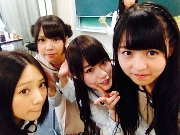

| 2014/01 24 Fri | 順番に食べよう。540 回目 |

いつぞやか撮った写真。
昨日は久しぶりに高円寺ぶらりした！
実はそんなに行ったことなくて
迷子になりながらなんとなくルートを
頭の中で考えながらぶらりしてました。
ほーお
この道はここに繋がってるわけね
じゃあこういったら
いい感じのルートになるわけね
なるほどねうん
てな感じで。
スカートだけ購入。
でも見るだけで楽しい。
どこ歩いてもかわいいお店がある。
目的なく行くといいの見つかるんだー
春服まだかなー
ほしいなー
まいまいがエンドレススンについて
説明してくれましたね。
これやってると楽しくなるから
友達と話してる時に
突然やってみるといいかも笑
......
いくちゃんれなりんまいちゅん
お誕生日おめでとう！
3人一緒の誕生日ってすごいなあ
真面目なところが似てるのかな。
......
玲香のブログに
私が加工したの載せられた。
加工したというか教えながら
こうやるんだよって適当に
指でシュッてやったものだけど←
お返しに加工してくれた！
↓
私の想像を遥かに越えてて笑

苔をイメージしたらしい
結構気に入ってしまったんだが
重要なちょんまげ隠された
まりか
コメント(398)
2014/01/24 00:30